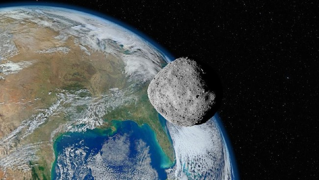

Fenomena Astronomi Langka: Asteroid 2024 PT5 Jadi "Bulan Kedua" Sementara Bumi
Selasa, 29 September 2026
JAKARTA — Bumi kedatangan sebuah objek luar angkasa unik yang sempat viral dan dijuluki oleh masyarakat sebagai fenomena "Bulan Kembar". Objek antariksa tersebut merupakan sebuah asteroid kecil berukuran sekitar 10 meter yang diberi nama 2024 PT5. Asteroid ini pertama kali ditemukan melalui teleskop canggih Asteroid Terrestrial-impact Last Alert System (ATLAS) di Afrika Selatan.
Berdasarkan perhitungan dinamika dan gravitasi dari para astronom di Universidad Complutense de Madrid, Spanyol, asteroid 2024 PT5 terperangkap sementara oleh gaya tarik gravitasi planet Bumi. Akibatnya, objek ini mengorbit Bumi dan bertindak seperti sebuah "bulan mini" (mini-moon) selama kurang lebih 53 hari, terhitung dari tanggal 29 September hingga 25 November.

Meskipun disebut sebagai "Bulan kedua", Badan Riset dan Inovasi Nasional (BRIN) menjelaskan bahwa ukurannya yang sangat kecil dan redup membuat asteroid ini tidak dapat dilihat langsung oleh mata telanjang maupun teleskop amatir biasa. Asteroid ini murni berasal dari sabuk asteroid Arjuna, yakni kelompok batuan luar angkasa yang memiliki jalur orbit mengitari Matahari dan sangat dekat dengan Bumi.
Para ilmuwan memastikan bahwa fenomena ini sepenuhnya aman dan tidak memberikan dampak buruk bagi kehidupan di Bumi. Setelah lepas dari cengkeraman gaya gravitasi Bumi pada akhir November, asteroid 2024 PT5 akan kembali ke lintasan asalnya mengitari Matahari dan diprediksi baru akan melintas mendekati Bumi lagi dalam beberapa dekade mendatang.
info lebih lengkap
|